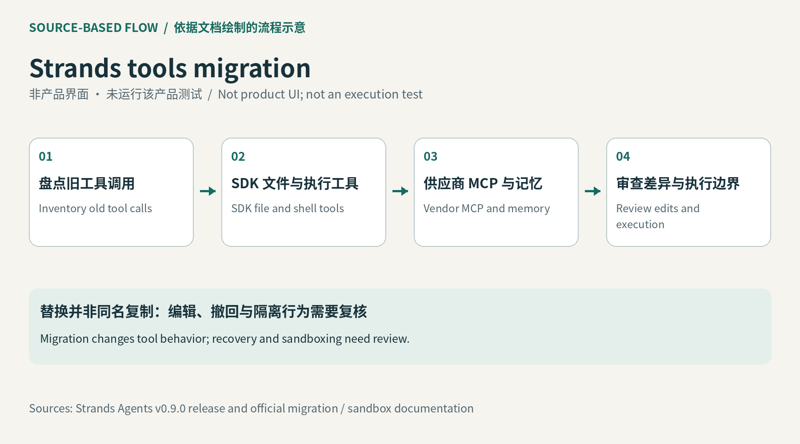

升级会先改变可运行性
Strands 的独立社区工具包承担过网页、文件、命令和子代理等常用动作。11 月 4 日发布的 0.9.0 把弃用警告改成导入错误；维护者明确说，早于该版的版本仍能工作，但此后不再更新。已有应用若只让依赖管理器自动升到最新版，可能连任务入口都无法启动。接手者需要先列出实际导入的工具和调用位置，决定暂时固定旧版还是迁移，而不是把一条安装成功日志当成升级完成。这次事件是现有代理的维护与迁移节点，不是把所有内置工具重新算作首次发布。
Strands tools 0.9.0 · 开源 SDK 更新

Strands 的独立社区工具包承担过网页、文件、命令和子代理等常用动作。11 月 4 日发布的 0.9.0 把弃用警告改成导入错误；维护者明确说，早于该版的版本仍能工作，但此后不再更新。已有应用若只让依赖管理器自动升到最新版，可能连任务入口都无法启动。接手者需要先列出实际导入的工具和调用位置，决定暂时固定旧版还是迁移，而不是把一条安装成功日志当成升级完成。这次事件是现有代理的维护与迁移节点，不是把所有内置工具重新算作首次发布。
迁移表把原工具分到不同位置：文件操作进入 SDK 内置工具，部分外部服务转由供应商 MCP 提供，记忆功能交给 MemoryManager。后者可自动把相关记忆注入上下文，和等待模型主动调用检索工具不同。原 editor 拆成 read、write、edit；修改请求需要包含文件路径以及旧、新文本。工程人员还要检查外部工具的名称、认证和返回结构，保留旧任务的输入样例作为对照。浏览器等工具没有现成的一对一替代，不应只改包名后就宣称所有功能保持一致。
新的 edit 要求旧字符串在文件里只出现一次，这能让一次请求的修改对象更明确；遇到重复文本，调用方需要先缩小上下文再改。文档同时说明，工具以进程权限写入绝对路径。迁移说明提醒，新 write 和 edit 会立即写入，没有旧的备份文件，也没有等价 undo_edit 命令。对用于更新配置或批量修文件的代理，团队应把版本控制、写前快照或其他恢复手段接在自己的工作流里，并检查失败后文件实际留下什么。唯一匹配解决定位问题，不保证修改内容正确。
SDK 的沙箱把命令、文件和代码执行交给独立后端，模型调用与状态管理仍由宿主上的代理进程处理。省略 sandbox 参数时，这些工具会直接在宿主运行，不能把“SDK 已内置”理解成“默认已隔离”。可以用受控测试目录检查一次读取、修改、命令失败和恢复，确认路径、退出结果与文件差异都符合预期。实际采用成本包括维护这些测试、配置执行环境以及外部服务的认证和费用；本期没有运行迁移，也未确认各模型或供应商的账单。已有应用最先需要的是保住原任务的行为，而非增添更多工具。